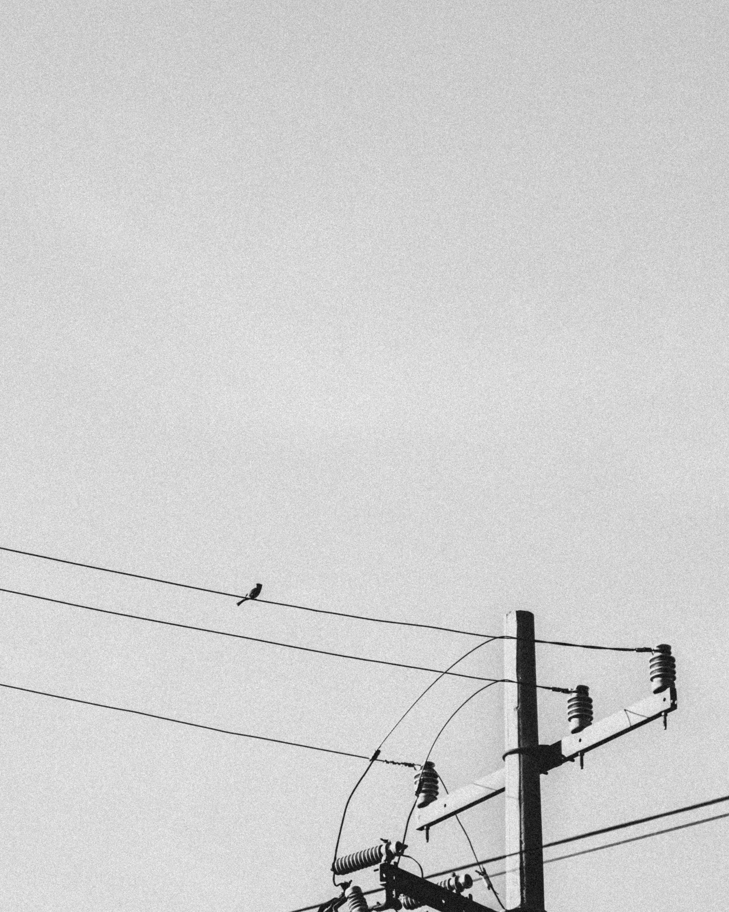

Reymund 'myuk' Jumawan


Reymund 'myuk' Jumawan
I have a clear, logical mind with a practical approach to problem-solving and a drive to see things through to completion. I have more than 1 year of experience in managing and leading teams across multiple sectors as customer service representative and team captain. With a proven track-record in reporting analyst for more than 4 years, I always strive for the highest standard possible, at any given task and in any situation. I am eager to learn, I enjoy overcoming challenges, and I have a genuine interest in that role and making organisations successful.

Bachelo of Science in dfdf Information Technology, June 2011 - November 2015